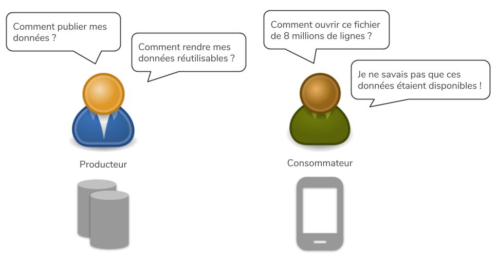
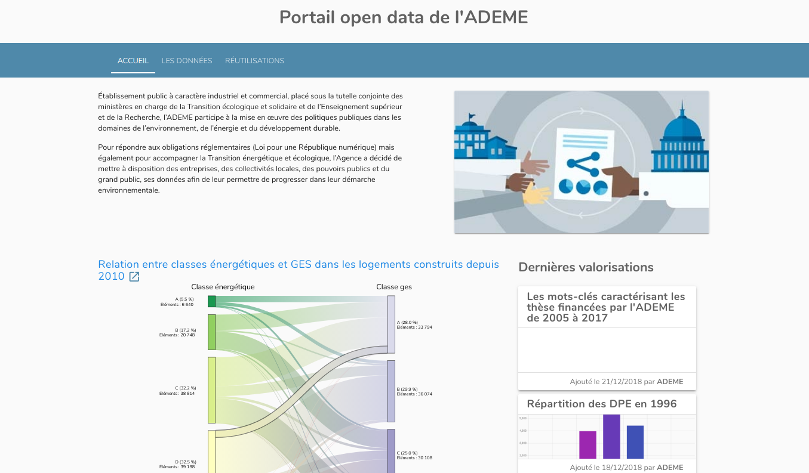
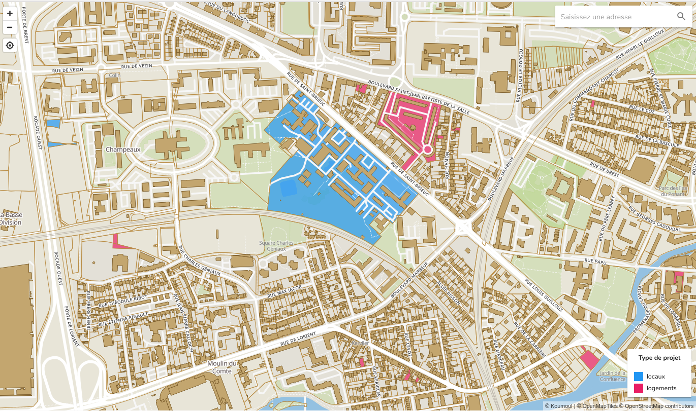
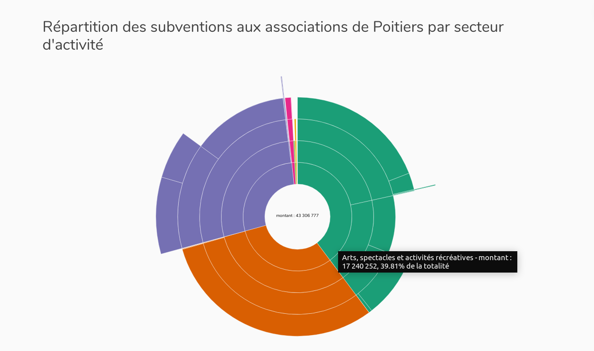
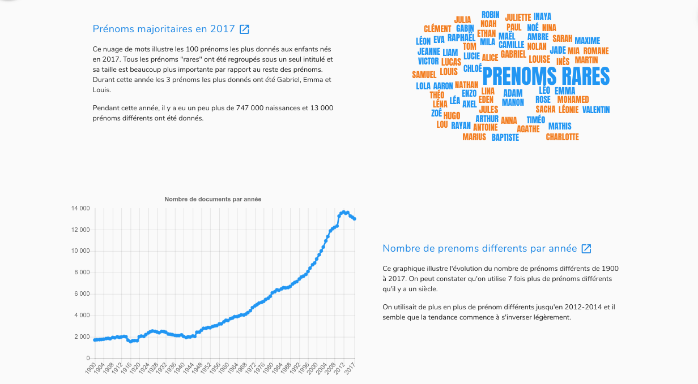

Koumoul
- Nuage (Cloud) en breton
- Société fondée en avril 2017
- Localisée dans le Morbihan, à Vannes
- 3 personnes
- 12 ans d'experience dans la data, 6 ans dans l'Open Data
- Contributeur et intégrateur Open Source
- Plateforme de valorisation de données
Problématique : partage de données

Notre métier : la diffusion et valorisation des données
- Faciles à trouver : recherche full-text dans les données et métadonnées
- Accessibles : API, possibilité de naviguer dans de gros datasets
- Interopérables : contrat (stabilité), normalisation, sémantique
- Réutilisables : applications de valorisation facilement configurables
Cas d'usage
Portails de données : open-data, private-data
Diffusez ses données et permettre à des développeurs de les réutiliser facilement grâce aux APIs.

Géocodage
Localisez ses données pour les afficher sur une carte : études de concurrence, analyses marketing, recensement immobilier, ...

Analyses sectorielles
Enrichir ses données sur les entreprises et les agréger par secteur d'activité sur différents niveaux.

Illustration d'articles
Les différentes visualisations permettent d'agrémenter des articles de blog ou journal avec des visualisations interactives.

Communication
Communiquer sur ses chiffres clés, en interne avec ses collaborateurs ou publiquement sur son site en y intégrant des visualisations.
Exploration rapide
Intégrer un moteur de recherche de documments dans son site : délibérations d'un commune, fiches conseil, ...
Projet : Mise en valeur des données des communes
Mobilités entrantes et sortantes
- Ex : résidentiel <-> travail
- Entre la commune et les communes voisines
- Cf rendu avec Kepler
- Diagramme de type chord
- Autres visualisations ?
Cadstre
- Représenter plusieurs informations sur une parcelle
- 3D ou le temps pour les dimensions supplémentaires
- Autres manière d'empiler les informations ?
Isochrones
- Calcul et représentation
- Equipements ou services
Autre
- Suggestions ouvertes
- Voir les travaux autour du Socle Commun des Données Locales (SCDL)
- Mais toujours à l'échelle d'une commune